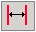

2.3. Általános adatok
Az „Általános adatoknak” a bal alsó ablakban megjelenõ listája az összes, sorban következõ pozícióhoz tartozó ikont és nevet tartalmazza. A terv általános adatai több értéket tartalmaznak, amelyeket a program szerkesztésekor, vagy a szerkesztés befejezése után módosítani lehet.
A számítások elõtt elsõsorban meg kell határozni:
- a tervben használt éghajlati és radiátor katalógusokat,
- a számítás terjedelmét, valamint azt, milyen módon hozzunk létre a programobjektumok (pl. a térelhatárolódefiníciók, hõ övezetek, stb.) neveinek sablonját,
- az épületre és annak elhelyezésére vonatkozó adatokat.
Az alapértelmezett aktív pozíció a „Terv címkéje”. Itt a „Terv” könyvjelzõn, a „Címke” mezõbe kell beírni a terv nevét, úgy, hogy az azonosítsa a tervet a következõ megnyitásakor. Be lehet írni a tervre vonatkozó további adatokat is, a beruházót és a tervezõt. Ezeknek az adatoknak információs jellegük van (cím, telefonszám, stb.), és nem feltétlenül szükségesek a számításokhoz.
A következõ, a „Szabványok és számítási opciók” pozícióban jelenik meg az a szabványcsomag, amelyen a számítások alapszanak. Normál esetben a hõveszteség számítás mindig elvégzésre kerül. További funkcióként ki lehet jelölni:
- „A szezonális energiaigény meghatározása”,
- „A páralecsapódás meghatározása a térelhatárolók belsejében.
- „Az infiltráció meghatározása a
- „A nem hûtõ térelhatárolók elrejtése”.
A  „Katalógusok kezelése” nyomógomb
lehetõvé teszi az éghajlati és a radiátorkatalógusok kiválasztását.
„Katalógusok kezelése” nyomógomb
lehetõvé teszi az éghajlati és a radiátorkatalógusok kiválasztását.
„Az épület adatai” pozícióban írjuk be az épület típusára, a beépítésre, az alapozás körvonalának fajtájára, az elhelyezésre, az árnyékolásra, a klimatikus adatokra, valamint a talajon levõ fûtött épületrész geometrikus méreteire vonatkozó alapinformációkat. Található itt egy, az éghajlati adatok katalógusának kiválasztását lehetõvé tevõ „Katalógusok kezelése” nyomógomb is.
A „Település” mezõben kell a korábban kiválasztott éghajlati adatok katalógusából az a települést, ahol (vagy amelynek közelében) az épület található. A legközelebbi meteorológiai állomást és a neki megfelelõ éghajlati zónát a program automatikusan választja ki. Abban az esetben, ha a felhasználó nem adja meg a használandó éghajlati katalógust, magának kell kitöltenie a "Település" és a „Külsõ levegõ hõmérséklete” mezõt. A „Meteorológia állomás” és „Aktinometriai állomás” mezõket (a szezonális energiaigény meghatározásához) ilyen esetekben nem szerkeszthetõk. Ilyen módon csak végsõ esetben szabad megadni az adatokat (ha nincs éghajlati adatok katalógus). A szezonális energiaigény kiszámítása opció kiválasztása esetén, a „Meteorológiai állomás” és az „Aktinometriai állomás” mezõkbe be kell írni a megfelelõ, a beolvasott éghajlati katalógusokat tartalmazó listáról kiválasztott állomás nevét. Ha azonban a település nevét az éghajlati adatok katalógusából választottuk ki, akkor a meterológiai és aktinometrikus állomásokat a program automatikusan beírja, mint az ehhez a településhez tartozókat.
! A szezonális energiaigény számítása csak akkor lehetséges, ha a felhasználó beolvassa az éghajlati adatok katalógusát.
A szezonális energiaigény számítása esetén be kell írni kiegészítõ éghajlati adatokat, az épület elhelyezésére vonatkozó adatokat, a belsõ hõforrásokat, valamint az épületet árnyékoló objektumok magasságát és távolságát. Az erre vonatkozó pontos adatokat a 4.3.3fejezet tartalmazza.
A „Radiátorok megválasztásának adatai”
pozícióban a felhasználó kiválaszthatja a programnak a helyiségekben a
radiátorok elõzetes megválasztását lehetõvé tevõ funkciót. A radiátorkatalógus
kiválasztása után a terv „Szabványok és
méretezési opciók” pozíciójában, valamint a „Radiátorok kiválasztása” opció
bekapcsolása után, a felhasználó kiválasztja az alapértelmezett radiátortípust.
A radiátor alapértelmezett elõremenõ hõmérsékletére, a fûtõközeg kihûlésére a
radiátorban, a termosztátra számolt pótlékra, valamint a radiátor
túlméretezésére vonatkozó mezõket a program tölti ki. Ezért a helyiség fûtési
paramétereitõl függõen ismételten ellenõrizni kell, és önállóan kell beírni
ezeket az adatokat. Ezután, a  „Radiátorkiegészítõk” nyomógombot használva meg kell adni a
radiátor bekötési módját a rendszerhez, a felépítésének típusát, a radiátorok
elhelyezését. A radiátorok méretére, a magasságára, hosszára és a mélységére
vonatkozó követelményeket „A radiátorok méreteinek korlátai”
„Radiátorkiegészítõk” nyomógombot használva meg kell adni a
radiátor bekötési módját a rendszerhez, a felépítésének típusát, a radiátorok
elhelyezését. A radiátorok méretére, a magasságára, hosszára és a mélységére
vonatkozó követelményeket „A radiátorok méreteinek korlátai”
A felhasználó a radiátorokat a rendelkezésre álló katalógusokból választhatja ki, ezek közül mindig meg kell adni, hogy raktárról illetve speciális megrendelésre. Az ilyen kiválasztás megadása a „Csak a raktáron levõk kiválasztása” négyzet megjelölésével történik”.További információ erre vonatkozóan a 4.3.3. fejezetben található.
A radiátorok elõzetes megválasztása lehetõvé teszi a programmal történõ munka tökéletesítését, mivel ezen a módon a fûtött helyiségekben meg van adva az alapértelmezett radiátortípus, nem kell kiválasztani egyenként minden helyiségben. Természetesen a felhasználó kiválaszthat az adott helyiségben az alapértelmezettõl eltérõ típust, pl. a fürdõszobába fürdõszoba radiátorokat.
Ha a felhasználó nem választotta ki azoknak a radiátorkatalógusoknak a „Szabványok és méretezési opciók” pozícióját, amelyeket a tervben használni akar, akkor kiválaszthatja a programnak ezen a helyén a szükséges katalógusokat a „Katalógusok kezelése” nyomógomb segítségével.
Az utolsó pozíció a Kifejezések változói. A kifejezések változói a terv paraméterezésére szolgálnak. A paraméterezés a programban a számok helyett a méretek vagy egyéb értékek megadásához változók használatán alapszik. A paraméterezés lehetõsége különösen hasznos az auditorok számára, akik az éves energiaigénynek az épület paramétereitõl függõ analízisét végzik, és egy objektum több konstrukciós változatát számolják végig.
! A változók deklarálását ajánlatos már a terven történõ munka elején elvégezni. Ez felszabadítja a felhasználót a attól, hogy a tervben számos változót kézzel kelljen megváltoztatnia.
Az „Általános adatok” pozíció mezõinek részletes leírása a 4.3 fejezetben található, a hõveszteség és a szezonális energiaigény számításának módszerét pedig a mellékletben tárgyaljuk – melléklet: alkalmazott szabványok és számítási módszerek.